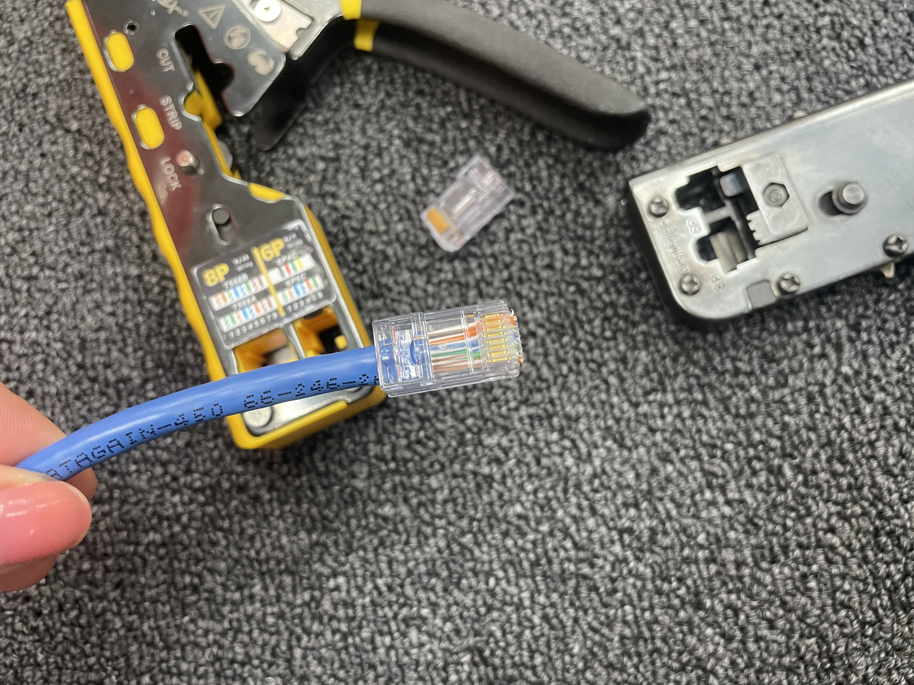
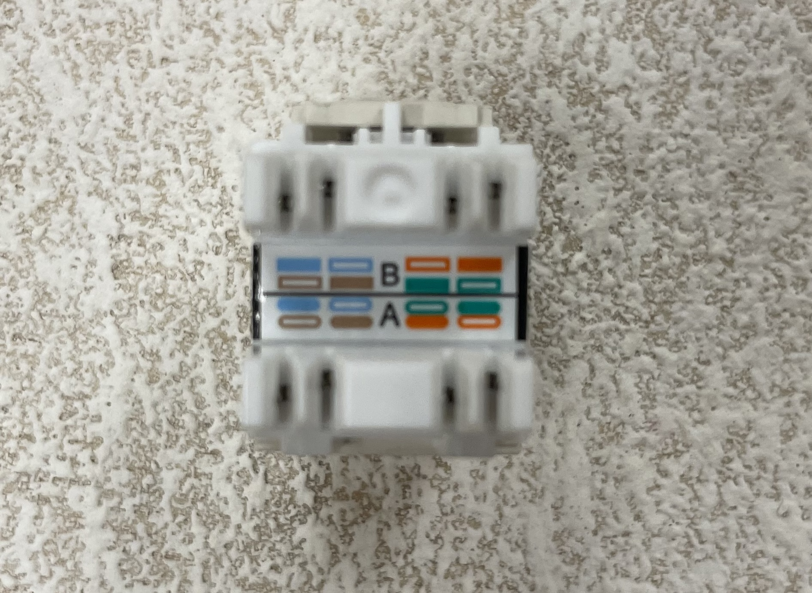
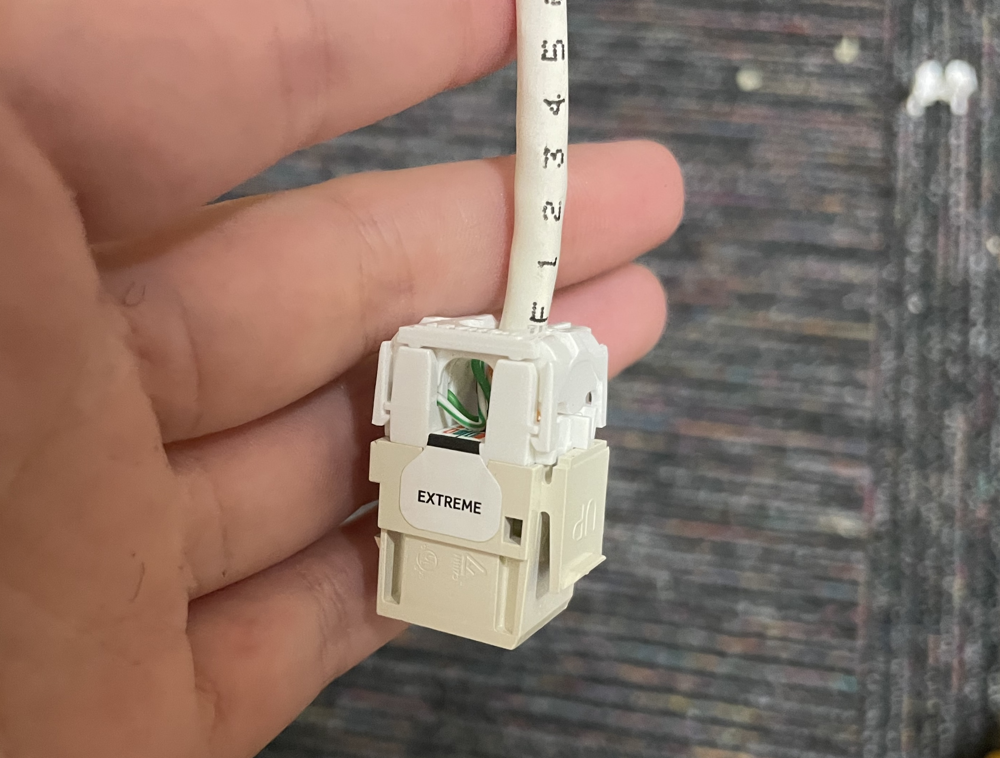
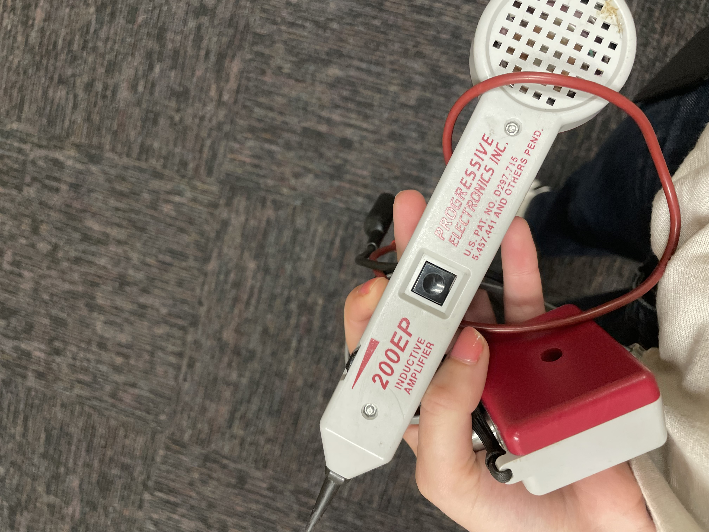
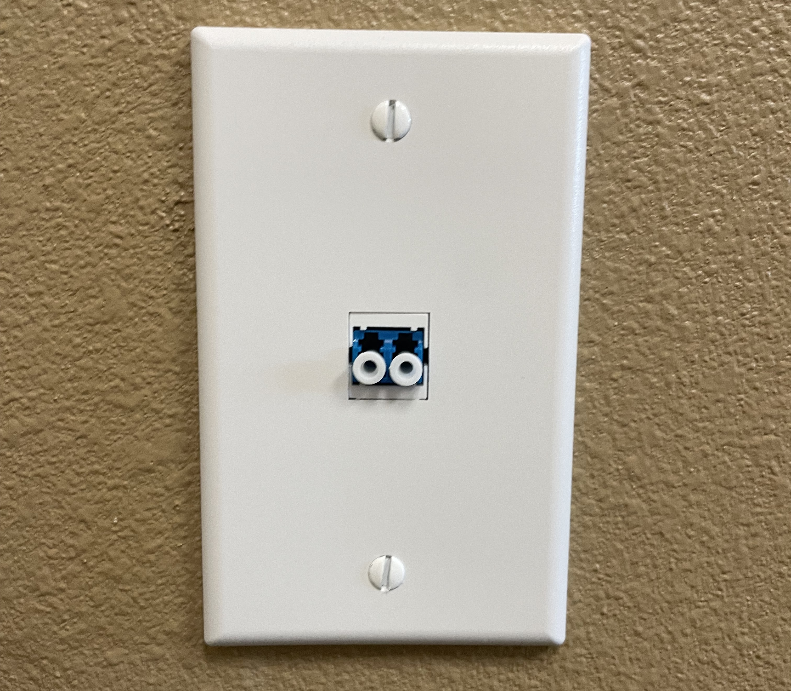

Network Cabling Fundamentals
Hands-on training in structured cabling, fiber safety, and cable identification · May 2026
Participated in hands-on training alongside network technicians to build foundational skills in structured cabling. Covered Cat6 cable termination, fiber optic safety protocols, and cable tracing techniques used in real network environments.
Cat6 cable to RJ45 connector
Terminated Cat6 Ethernet cables with RJ45 connectors using the T568B wiring standard, including stripping, arranging, and crimping.
Cat6 cable to keystone jack
Terminated Cat6 cables into keystone jacks for wall plates and patch panels using a punch down tool and IDC connections.
Fiber optic cable safety
Trained on proper handling and safety protocols for fiber optic cables, including the importance of treating every cable as active and the physical risks of mishandling.
Toning and tracing cables
Used toning equipment and cable testers to trace and identify specific cable runs: an essential skill for troubleshooting and documenting network infrastructure.
Why this matters
Understanding the physical layer of networking is critical for IT professionals. These skills bridge the gap between network administration and the infrastructure it depends on.
Cat6 cable termination (RJ45 connector) process
 Before
Before

After- Score approximately two inches from the end of the cable jacket using a cable stripper, rotating evenly without cutting into the inner wires
- Bend and snap at the scored point to cleanly remove the outer jacket, exposing the four twisted pairs
- Untwist all four copper wire pairs and straighten each wire individually
- Arrange all 8 wires in T568B order from left to right: white/orange, orange, white/green, blue, white/blue, green, white/brown, brown
- Hold the wires flat and parallel, then trim them evenly so they extend about half an inch past the jacket
- Insert the wires into the RJ45 connector with the clip side facing down, ensuring each wire seats fully into its channel and the jacket sits inside the connector body
- Crimp using an RJ45 crimping tool, which drives the metal contacts into each wire and secures the strain relief over the jacket
- Test the connection using a cable tester to verify continuity and correct pin mapping across all eight wires
Keystone jack termination


Keystone jacks are the modular ethernet port inserts that snap into wall plates and patch panels, providing the fixed endpoint for a cable run.
- Strip approximately one to two inches of the outer cable jacket, being careful not to nick the inner wires
- Separate and untwist the wire pairs, keeping them as close to the jacket as possible to maintain signal integrity
- Seat each wire into the correct color-coded slot on the keystone jack following the T568B wiring diagram printed on the jack
- Use a punch down tool to press each wire firmly into its IDC (Insulation Displacement Contact) slot, which cuts through the insulation and makes the connection with the copper conductor
- The punch down tool automatically trims the excess wire: verify all wires are seated flush
- Snap the keystone jack into the wall plate or patch panel and test the connection with a cable tester
Toning and identifying cables


Cable toning is used to identify and trace individual cable runs in network environments with large bundles of unlabeled cabling, such as through walls, above ceiling tiles, or behind patch panels.
- Connect one end of the cable to a toner device, which sends a signal through the wire
- Take the inductive probe (wand) to the other end and pass it over cable bundles: it emits an audible tone when it detects the signal
- Narrow down the exact cable by moving the probe closer to individual cables until the tone is strongest
- Confirm the identification using a cable tester, which verifies continuity and correct wiring across all pairs
Fiber optic safety

Fiber optic cables transmit data using light (laser or LED), which introduces unique safety considerations that differ from copper cabling.
- Never look directly into the end of a fiber optic cable: the infrared laser light is invisible to the eye but can cause permanent retinal damage
- Always assume a fiber cable is active, treating it with a "loaded gun" mentality
- Handle fiber cables gently: they are made of thin glass strands and can be damaged by sharp bends or excessive force
- Keep protective dust caps on connectors when not in use to prevent contamination, which can degrade signal quality
- Dispose of any cleaved fiber scraps carefully: the tiny glass fragments are nearly invisible and can pierce skin
← Back to Projects